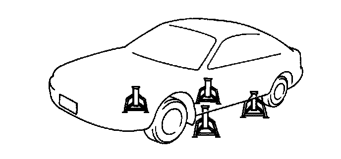

EGR Control Module: Testing and Inspection
EGR Control Inspection1. Verify that EGR valve operation (initial operation) sound is heard when the ignition switch is turned to ON.
2. If the operation sound is not heard, connect the NGS tester to DLC-2 and verify that the diagnostic trouble code No. P1496, P1497, P1498 or P1499 is shown. Carry out troubleshooting of code No. P1496, P1497, P1498 or P1499.
3. Start the engine and run it at idle.
4. Select the SIMULATION TEST function on the NGS display.
5. Increase the step value of EGR valve from 0 to 40 by using "SEGRP". Operate the EGR valve and inspect if the engine speed becomes unstable or the engine stalls.
6. If the engine speed will not change, do as follows.
1. Stop the engine.
2. Remove the EGR valve.
3. Connect the EGR valve connector.
4. Turn the ignition switch to ON.
5. Select the SIMULATION TEST function on the NGS display.
6. Increase the step value of EGR valve from 0 to 40 by using "SEGR P". Inspect the EGR operation.
1. If the EGR valve is operated, clean the EGR valve and reinspect from step 3.
2. If the EGR valve will not operate, replace the EGR valve and reinspect from step 3.
7. Warm up the engine to normal operating temperature.

8. On level ground, jack up the vehicle and support it evenly on safety stands or set the vehicle on the chassis roller.
9. Select the PID/DATA MONITOR function on the NGS display.
10. Select the following items.
- SEGRP
- RPM
- VS
- TP V
- ECT V
11. Let the vehicle idle and verify that the SEGRP value is 0.
12. Depress the accelerator pedal and verify that the SEGRP value is increased.
13. If the SEGRP value will not increased, do as follows.
1. Verify that the TP V value is increased when the accelerator pedal is depressed.
2. Verify that the VS is increased when the tires are rotated.
3. Verify that the ECT V is within the specified value when the engine warms up. (Refer POWERTRAIN CONTROL MODULE (PCM) INSPECTION.)
4. If not as specified, inspect the following.
- Throttle position sensor
- Vehicle speed sensor
- Engine coolant temperature sensor
- Wiring harnesses and connectors (PCM-throttle position sensor, PCM-vehicle speed sensor, PCM-engine coolant temperature sensor)
14. Stop the vehicle and verify that the SEGRP is returned 0.